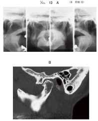
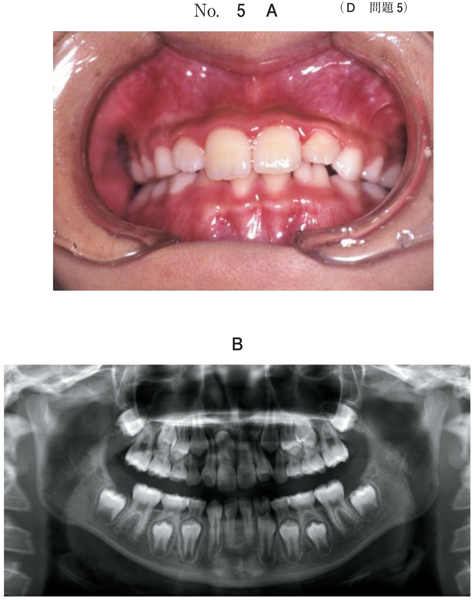
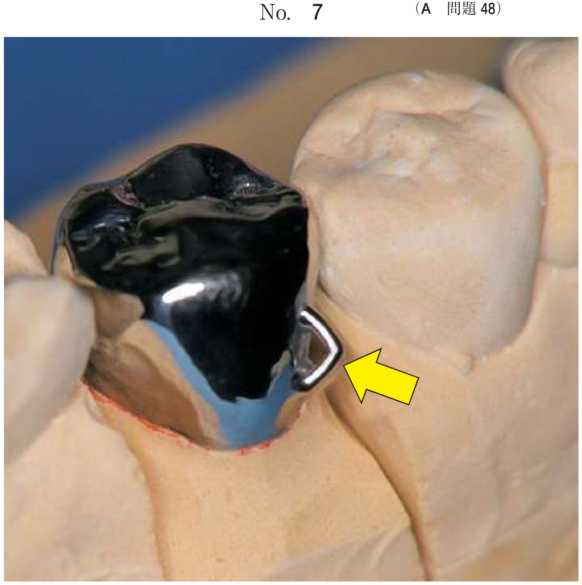
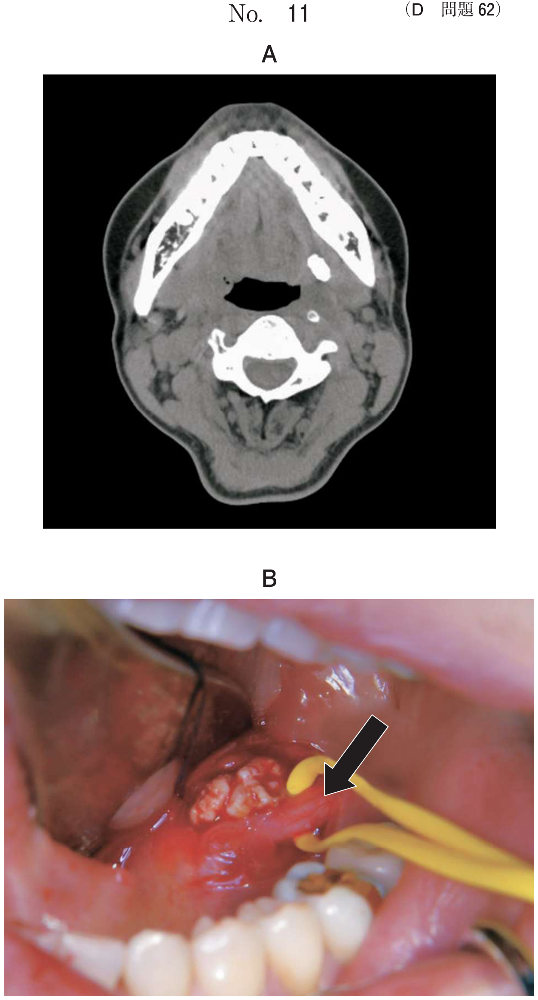

顎関節の病変
顎関節の画像検査
| 検査法 | 特徴・適応 |
|---|---|
| 単純X線 | 下顎窩に対する下顎頭の位置、骨形態の観察 |
| CT | 骨形態や3次元的位置を詳細に観察 骨変形の診断に優れる |
| MRI | 軟組織診査、関節円板の位置異常、骨髄信号 円板穿孔・関節腔狭窄の診断は限界あり |
| 顎関節造影 | 二重造影で円板の穿孔や関節腔狭窄を描出可能 |
- 関節円板の位置 → MRI
- 骨変形の評価 → CT
- 円板穿孔の診断 → 顎関節造影（二重造影）
顎関節症の病態分類
| 分類 | 病態 | 画像所見 |
|---|---|---|
| I型 | 咀嚼筋痛障害 | 画像所見なし |
| II型 | 顎関節痛障害 | 画像所見なし |
| III型 | 顎関節円板障害 a. 復位性 / b. 非復位性 |
MRIで関節円板転位 |
| IV型 | 変形性顎関節症 | CT・X線で骨変形 骨棘、骨硬化、吸収など |
画像検査で所見を検出できるのはIII型とIV型のみ
関節円板のMRI所見
関節円板の信号
関節円板はT1・T2・プロトン密度強調像いずれも低信号（皮質骨と同様にプロトン数が少ないため）
関節円板転位の分類
| 分類 | 閉口時 | 開口時 |
|---|---|---|
| 正常 | 下顎頭上に位置 | 下顎頭上に位置 |
| 復位性前方転位 | 前方転位 | 正常位に戻る |
| 非復位性前方転位 | 前方転位 | 前方転位のまま |
- 復位性：開口時にクリック音、開口により円板が戻る
- 非復位性：クリック音消失→開口障害、円板は戻らない
顎関節の主な疾患
変形性顎関節症（IV型）
- 下顎頭の骨棘形成、骨硬化、吸収
- 関節面の粗造化
- 骨変形の診断はCTが優れる
滑膜性骨軟骨腫症
- 軟骨粒が関節腔に脱皮する腫瘍類似疾患
- 画像所見：顆粒状の不透過像が下顎頭周囲に散見
- MRI T2強調像で関節腔の著明な拡張、多数の顆粒状低信号
顎関節強直症
- 強度の開口障害をきたす
- 下顎頭と下顎窩が線維性または骨性に連続
- 外傷や感染が誘因
筋突起過長症
- 開口障害（雑音・疼痛なしが特徴）
- 筋突起が頬骨弓下面に接触
- 3D-CTで筋突起の形態を確認
過去問で確認
36歳の女性。左側頬部の疼痛を主訴として来院した。閉口時と開口時の左側顎関節MRI（別冊No.13）を別に示す。
顎関節の状態はどれか。1つ選べ。


b 脱臼
c 滑膜炎
d 関節円板転位
e 下顎頭の変形
【解説】閉口時・開口時ともに関節円板（低信号）が下顎頭上の正常位置にある。骨変形もなく正常。
45歳の女性。顎関節部の痛みを主訴として来院した。1年前に開口時の雑音を自覚したが、2か月前から雑音が消失し痛みが出てきたという。顎関節部に開口時痛を認める。開閉口位のMRIプロトン密度強調像（別冊No.31）を別に示す。
関節円板の位置の組合せで正しいのはどれか。1つ選べ。


b 復位性前方転位 非復位性前方転位
c 正常 復位性前方転位
d 非復位性前方転位 正常
e 非復位性前方転位 非復位性前方転位
【解説】「雑音が消失し痛みが出てきた」は復位性→非復位性への移行を示唆。左右で所見が異なり、片側が非復位性前方転位、片側が正常。
右側顎関節部の開口時痛を有する患者の右側顎関節部MRI（別冊No.27）を別に示す。
認められる所見はどれか。2つ選べ。


b 下顎頭の骨棘形成
c 下顎頭の骨髄浮腫
d 上関節腔の滑液貯留
e 非復位性関節円板前方転位
【解説】MRIで関節円板が前方に転位したまま（非復位性）。上関節腔にT2高信号の滑液貯留を認める。円板穿孔はMRIでは診断困難。
67歳の女性。右側顎関節部の開口時痛を主訴として来院した。2年前から自覚していたが、痛みが弱いため放置していたという。初診時のエックス線写真（別冊No.13A）、CT（別冊No.13B）及びMRI（別冊No.13C）を別に示す。
最も疑われるのはどれか。1つ選べ。


b 下顎頭肥大
c 関節突起骨折
d 変形性顎関節症
e 関節突起発育不全
【解説】CTで下顎頭の変形（骨棘形成、関節面の粗造化）を認める。長期の開口時痛と骨変形から変形性顎関節症（IV型）。
56歳の男性。開口障害を主訴として来院した。3か月前から症状があるという。最大開口量は28mmで、開口時に左側顎関節に疼痛を認める。初診時のエックス線画像（別冊No.13A）、CT（別冊No.13B）及びMRI（別冊No.13C）を別に示す。
最も疑われるのはどれか。1つ選べ。


b 顎関節強直症
c 化膿性顎関節炎
d 滑膜性骨軟骨腫症
e リウマチ性顎関節炎
【解説】CTで下顎頭周囲に顆粒状の石灰化像、MRIで関節腔の拡張と多発性の低信号を認める。滑膜性骨軟骨腫症の特徴的所見。
15歳の男子。口を開けづらいことを主訴として来院した。5年前に気付き、徐々に開きにくくなったという。顎関節部に雑音や疼痛は認められない。最大開口量は20mmであった。初診時のエックス線画像（別冊No.15A）とCT横断像、矢状断像および3D-CT像（別冊No.15B）を別に示す。
診断名はどれか。1つ選べ。


b 骨軟骨腫
c 軟骨肉腫
d 顎関節強直症
e 筋突起過長症
【解説】開口障害があるが「雑音・疼痛なし」が重要。3D-CTで筋突起の過長を認める。筋突起が頬骨弓下面に接触して開口制限を生じている。